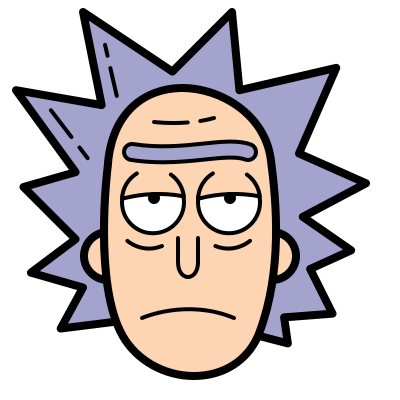

Rick C-137 é um cientista maluco sociopata que parece saber tudo no universo e, portanto, considera a vida uma experiência traumatizante e sem sentido. Após o assassinato de sua esposa Diane e filha Beth Sanchez em sua realidade nativa (C-137) por seu eu paralelo Rick Prime, Rick dedica sua vida a caçar Prime, desenvolvendo viagens interdimensionais e construindo uma parede ao redor do segmento do multiversoonde.